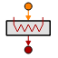

THERMAL Library
|
Components
|
Ports
|
Classes
|
Functions
|
Enumeratives
|
Global Variables
THERMAL.Heater
COMPONENT
Heater
ICON:

DESCRIPTION:
Electrical heater (local or linear). Power dissipation value is given by the external signal
CONSTRUCTION PARAMETERS:
NAME
TYPE
DEFAULT
DESCRIPTION
UNITS
n
INTEGER
1
Number of nodes
-
PORTS:
NAME
TYPE
PARAMETERS
DIRECTION
CARDINALITY
DESCRIPTION
s_power
PORTS_LIB.analog_signal
IN
Input power signal
tp_out
PORTS_LIB.thermal
(n = n)
OUT
1,1
Thermal outlet port
FORMULATION:
Document generated automatically (Date: 2019:01:23, Time: 00:20:04)